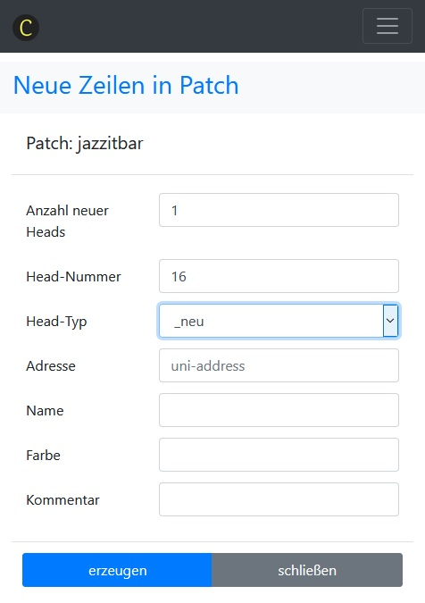

Patch¶
Jedes physisch vorhandene Gerät wird im Patch eingetragen. Damit wird es für ClubDMX verfügbar.
Aufruf über die Navigation: Einrichtung -> Config -> Patch bearbeiten.
Zu den einzelnen Spalten:
HeadNr: Jedes Gerät wird mit einer Zahl identifiziert. Es können auch mehrere Geräte dieselbe HeadNr haben. Sie werden dann von ClubDMX gleich behandelt.
HeadType: Jedem Gerät wird eine Head-Datei zugeordnet. Das ist die eindeutige Beschreibung der einzelnen DMX-Kanäle für das zu patchende Gerät.
Addr: Die DMX-Startadresse. Setzt sich aus zwei Komponenten zusammen, die mit Bindestrich getrennt sind: <Universum>-<Startadresse>. Von ClubDMX wird beim Erstellen von neuen Zeilen geprüft, ob die Adressen korrekt im Bereich von 1-512 liegen. Nicht geprüft wird, ob eventuell Überschneidungen mit anderen Heads auftreten.
Name: Das ist ein Textfeld, das für den Benutzer zur Identifizierung des Hardware-Gerätes dient. Beim Import des Patch in die Stage wird der Name zur Identifikation des Stage-Elementes verwendet.
Gel (Farbe): Das ist ein Textfeld, das für die Farbnummer eines konventionellen Scheinwerfers gedacht ist. Dient zur Dokumentation eines Projektes und ist zur Zeit nicht weiter ausgeführt.
Comment: Wie schon der Name sagt, für Kommentar und Anmerkung
Neuen Patch erstellen¶
In jeder Datenbank-Kategorie gibt es eine Tabelle mit Namen _neu, die als Prototyp fungiert. So auch in der Kategorie Patch. Sichere diesen Prototyp unter einem neuen Namen und beginne nun mit der Erstellung der Zeilen.
Mit dem Button Neue Zeile(n) wird ein Formular zum Erzeugen
eines neuen Eintrags geöffnet. Fülle das Formular zur
Erstellung eines neuen Eintrags aus.
Mit dem Formular können mehrere Heads vom selben Head-Typ in einem Schritt erzeugt werden. Je nach Head-Typ werden die Adressen für die einzelnen Heads berechnet, mit dem Abstand, der sich aus der Head-Definition errechnet.
Dabei wird auch der maximale DMX-Wert von 512 berücksichtigt. Unter Umständen können daher weniger als die gewünschten Heads erzeugt werden, wenn ein oder mehrere Attribute einen DMX-Wert über 512 hätten.
Im Bearbeitungsmodus SELECT kannst du nun sehr schnell weitere Zeilen mit Copy/Paste erzeugen, die du im Modus EDIT entsprechend anpasst.
